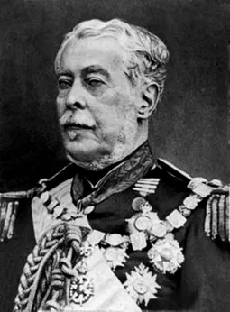
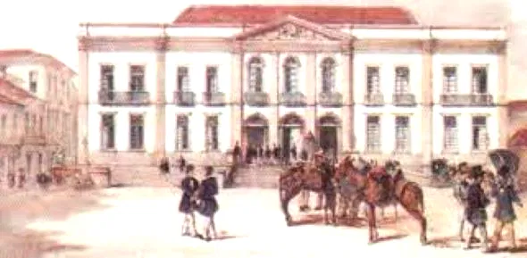

Luis Alves de Lima e Silva

Duque de Caxias (Luís Alves de Lima e Silva) (1803-1880) foi um militar brasileiro. É o Patrono do Exército. Foi um dos maiores vultos da nossa história.
Caxias foi chamado de “O Pacificador.” Em sua homenagem, o dia 25 de agosto, dia de seu nascimento, é comemorado o “Dia do Soldado”.
Infância e Formação Militar
Luís Alves de Lima e Silva nasceu na fazenda São Paulo, no Taquaraçu, próximo da Vila Estrela, hoje "município de Duque de Caxias", Rio de Janeiro, no dia 25 de agosto de 1803. Filho de Francisco de Lima e Silva e de Cândida de Oliveira Belo, cresceu em meio a uma família de militares.
Seu avô, José Joaquim de Lima e Silva, um militar português, imigrou para o Brasil em 1767, e se instalou no Rio de Janeiro, então capital do país. Seu pai foi brigadeiro do Exército Imperial e membro da Regência-Trina durante o Período Regencial na menoridade do futuro imperador Dom Pedro II.
No dia 22 de novembro de 1808, o 1.º Regimento de Infantaria de Linha, comandado por seu avô, recebia o novo soldado, com cinco anos, apenas para homenagear seu avô, então Ministro da Guerra. Entre 1809 e 1817, Luís Alves estudou no Seminário São Joaquim (hoje Colégio Pedro II).

Academia Real Militar - Rio de Janeiro
Em 1818, Luís Alves ingressou na Academia Real Militar, criada por Dom João VI em 1844, onde permaneceu até 1821. Galgou os postos de cadete, alferes e tenente. Quando concluiu o curso, foi incorporado ao 1.º Batalhão de Fuzileiros.
Batalhão do imperador
Em 1822, quando o Brasil tornou-se independente de Portugal, Luís Alves ingressou no “Batalhão do Imperador", comandado por seu tio José Joaquim de Lima e Silva.
Em 1823, participou da luta no combate aos soldados portugueses, na Bahia, que relutavam a aceitar a Independência do país. Com a vitória do Batalhão, Luís Alves foi promovido a Capitão e, com 21 anos, recebeu a “Imperial Ordem do Cruzeiro” das mãos de Dom Pedro I.
Em 1825, Luís Alves foi chamado para manter a unidade nacional, desta vez, na “Campanha da Cisplatina” – conflito ocorrido entre o Brasil Império e as Províncias Unidas do Rio da Prata, pela posse da "Província Cisplatina", no atual território do Uruguai. Três vezes foi citado por bravura. Ganhou as insígnias de Major e as comendas da Ordem de São Bento de Ávis e da Rosa.
Ultimos anos
Após a vitória do Brasil na Guerra do Paraguai, Caxias, com 66 anos, recebe o título de “Duque”, com medalhas e condecorações. No dia 23 de março de 1874 faleceu sua esposa.
Em 1875, o “Duque de Caxias” foi nomeado, por Dom Pedro II, para a "presidência do Conselho de Ministros", e, assumiu também o "Ministério da Guerra". Era um Gabinete que serviria à Princesa Isabel na ausência do Imperador.
Em 1877, cansado e doente, Duque de Caxias retirou-se para a fazenda do Barão de Santa Mônica, de propriedade de seu genro, localizada em Valença, Rio de Janeiro.
Duque de Caxias faleceu no Rio de Janeiro, no dia 7 de maio de 1880. Em 1962 foi nomeado pelo Governo Federal o “Patrono do Exército”. Em sua homenagem, o dia 25 de agosto, dia de seu nascimento, é comemorado o “Dia do Soldado”.